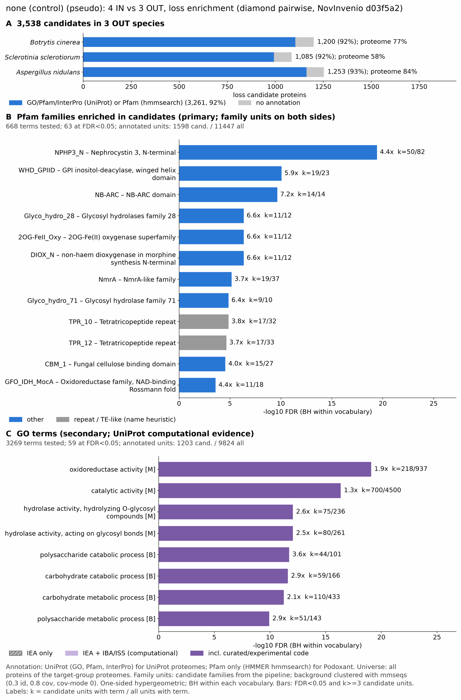

yc pseudo powdery mildew: functional enrichment (loss)
One-sided hypergeometric test per term; Benjamini-Hochberg FDR within each scope, level and vocabulary. Candidates are the loss candidates: gene families present in the OUT group and absent from the IN group. Universe: proteome. Background clustered: True (33210 sequences in 19924 clusters, mmseqs easy-cluster --min-seq-id 0.3 -c 0.8). Family level: one unit per candidate family and per background cluster.
Sources: Pfam: 2026-01-27-Pfam38.2; InterPro entries: 110.0; GO: releases/2026-07-26; analysis generated 2026-10-24T14:48:05. Source tables: /bigdata/stajichlab/jstajich/projects/NovInvenio_Investigations/studies/fungi/yeast_convergence/yc_pseudo_powdery_mildew/analysis/enrichment/outputs/loss/proteome_clustered.
Full record: PROVENANCE. Run report: report.html.
- Annotation provenance is not fully recorded: PROVENANCE.yaml lists the per-species annotation files and their checksums, but not the UniProt release they come from.
- GO results are secondary. GO annotations include computational evidence (IEA, IBA); the GO evidence column shows if a term has non-IEA support.
- Candidate families (pipeline clustering of candidates) and background clusters (mmseqs clustering of the background proteome) are made by different runs, so family-level counts are not fully comparable.
Summary figure

Annotation coverage
Fraction of proteins with at least one term per vocabulary. Universe = all proteins of the species; candidates = the candidate set.
| Species | Set | Proteins | Pfam | Pfam clan | InterPro | GO | Any |
|---|---|---|---|---|---|---|---|
| Botrcine | universe | 11742 | 71.7% | 58.1% | 76.9% | 61.6% | 77.2% |
| Botrcine | candidates | 1200 | 84.2% | 72.7% | 91.8% | 60.8% | 92.1% |
| Sclescle | universe | 14445 | 52.5% | 42.6% | 57.2% | 47.0% | 57.6% |
| Sclescle | candidates | 1085 | 80.4% | 68.5% | 91.1% | 61.2% | 91.5% |
| Anid | universe | 10561 | 78.2% | 64.8% | 83.1% | 71.4% | 83.7% |
| Anid | candidates | 1253 | 84.5% | 74.3% | 92.2% | 68.2% | 92.8% |
| ALL_OUT | universe | 36748 | 66.0% | 53.9% | 71.0% | 58.7% | 71.4% |
| ALL_OUT | candidates | 3538 | 83.1% | 72.0% | 91.7% | 63.5% | 92.2% |
Tests summary
Per vocabulary: terms with FDR < 0.05 / terms tested. Protein level counts proteins; family level counts candidate families and background clusters.
| Scope | Level | Cand. units | Pfam sig / tested | Pfam clan sig / tested | InterPro sig / tested | GO sig / tested |
|---|---|---|---|---|---|---|
| whole_set | family | 1984 | 63 / 668 | 14 / 307 | 108 / 1455 | 59 / 3269 |
| whole_set | protein | 3538 | 190 / 1592 | 46 / 412 | 367 / 3484 | 215 / 4799 |
| Anid | family | 1040 | 17 / 352 | 12 / 242 | 51 / 848 | 19 / 2712 |
| Anid | protein | 1253 | 49 / 464 | 19 / 256 | 100 / 1090 | 57 / 2883 |
| Botrcine | family | 1031 | 26 / 377 | 13 / 242 | 52 / 874 | 42 / 2545 |
| Botrcine | protein | 1200 | 39 / 450 | 14 / 255 | 80 / 1064 | 73 / 2696 |
| Sclescle | family | 992 | 16 / 339 | 8 / 237 | 33 / 825 | 41 / 2394 |
| Sclescle | protein | 1085 | 23 / 401 | 13 / 246 | 59 / 973 | 61 / 2519 |
Top 25 Pfam terms (whole set, family level)
25 rows shown, ordered by FDR then p-value; 25 have FDR < 0.05 (bold).
| Term | Name | k / N cand. | n / M bg | Fold | FDR (BH) |
|---|---|---|---|---|---|
| PF24883 | NPHP3_N: Nephrocystin 3, N-terminal | 50 / 1598 | 82 / 11447 | 4.368 | 3.68e-20 |
| PF22939 | WHD_GPIID: GPI inositol-deacylase, winged helix domain | 19 / 1598 | 23 / 11447 | 5.918 | 8.69e-11 |
| PF00931 | NB-ARC: NB-ARC domain | 14 / 1598 | 14 / 11447 | 7.163 | 2.26e-10 |
| PF00295 | Glyco_hydro_28: Glycosyl hydrolases family 28 | 11 / 1598 | 12 / 11447 | 6.566 | 4.44e-07 |
| PF03171 | 2OG-FeII_Oxy: 2OG-Fe(II) oxygenase superfamily | 11 / 1598 | 12 / 11447 | 6.566 | 4.44e-07 |
| PF14226 | DIOX_N: non-haem dioxygenase in morphine synthesis N-terminal | 11 / 1598 | 12 / 11447 | 6.566 | 4.44e-07 |
| PF05368 | NmrA: NmrA-like family | 19 / 1598 | 37 / 11447 | 3.678 | 6.96e-06 |
| PF03659 | Glyco_hydro_71: Glycosyl hydrolase family 71 | 9 / 1598 | 10 / 11447 | 6.447 | 1.40e-05 |
| PF13374 | TPR_10: Tetratricopeptide repeat | 17 / 1598 | 32 / 11447 | 3.806 | 1.40e-05 |
| PF13424 | TPR_12: Tetratricopeptide repeat | 17 / 1598 | 33 / 11447 | 3.69 | 2.26e-05 |
| PF00734 | CBM_1: Fungal cellulose binding domain | 15 / 1598 | 27 / 11447 | 3.98 | 2.82e-05 |
| PF01408 | GFO_IDH_MocA: Oxidoreductase family, NAD-binding Rossmann fold | 11 / 1598 | 18 / 11447 | 4.378 | 2.61e-04 |
| PF11951 | Fungal_trans_2: Fungal specific transcription factor domain | 36 / 1598 | 130 / 11447 | 1.984 | 0.001 |
| PF04616 | Glyco_hydro_43: Glycosyl hydrolases family 43 | 9 / 1598 | 15 / 11447 | 4.298 | 0.002 |
| PF08386 | Abhydrolase_4: TAP-like protein | 6 / 1598 | 7 / 11447 | 6.14 | 0.002 |
| PF11927 | HODM_asu-like: Haem-dependent oxidative N-demethylase, alpha subunit-like | 6 / 1598 | 7 / 11447 | 6.14 | 0.002 |
| PF00248 | Aldo_ket_red: Aldo/keto reductase family | 12 / 1598 | 25 / 11447 | 3.438 | 0.002 |
| PF00296 | Bac_luciferase: Luciferase-like monooxygenase | 5 / 1598 | 5 / 11447 | 7.163 | 0.002 |
| PF04082 | Fungal_trans: Fungal specific transcription factor domain | 58 / 1598 | 251 / 11447 | 1.655 | 0.002 |
| PF04479 | RTA1: RTA1 like protein | 8 / 1598 | 13 / 11447 | 4.408 | 0.003 |
| PF01328 | Peroxidase_2: Peroxidase, family 2 | 6 / 1598 | 8 / 11447 | 5.372 | 0.005 |
| PF07519 | Tannase: Tannase and feruloyl esterase | 6 / 1598 | 8 / 11447 | 5.372 | 0.005 |
| PF13450 | NAD_binding_8: NAD(P)-binding Rossmann-like domain | 11 / 1598 | 24 / 11447 | 3.283 | 0.005 |
| PF13508 | Acetyltransf_7: Acetyltransferase (GNAT) domain | 9 / 1598 | 17 / 11447 | 3.792 | 0.005 |
| PF13532 | 2OG-FeII_Oxy_2: 2OG-Fe(II) oxygenase superfamily | 8 / 1598 | 14 / 11447 | 4.093 | 0.005 |
Top 25 InterPro terms (whole set, family level)
25 rows shown, ordered by FDR then p-value; 25 have FDR < 0.05 (bold).
| Term | Name | k / N cand. | n / M bg | Fold | FDR (BH) |
|---|---|---|---|---|---|
| IPR056884 | Domain:Nephrocystin 3-like, N-terminal | 50 / 1788 | 82 / 12613 | 4.301 | 1.70e-19 |
| IPR054471 | Domain:GPI inositol-deacylase, winged helix domain | 19 / 1788 | 23 / 12613 | 5.827 | 2.54e-10 |
| IPR002182 | Domain:NB-ARC | 14 / 1788 | 14 / 12613 | 7.054 | 6.14e-10 |
| IPR036188 | Homologous_superfamily:FAD/NAD(P)-binding domain superfamily | 71 / 1788 | 218 / 12613 | 2.297 | 1.04e-09 |
| IPR036291 | Homologous_superfamily:NAD(P)-binding domain superfamily | 109 / 1788 | 409 / 12613 | 1.88 | 3.69e-09 |
| IPR029058 | Homologous_superfamily:Alpha/Beta hydrolase fold | 89 / 1788 | 314 / 12613 | 1.999 | 7.45e-09 |
| IPR027443 | Homologous_superfamily:Isopenicillin N synthase-like superfamily | 15 / 1788 | 19 / 12613 | 5.569 | 8.16e-08 |
| IPR053137 | Family:Nucleotide-binding leucine-rich repeat (NLR)-like | 21 / 1788 | 36 / 12613 | 4.115 | 1.62e-07 |
| IPR000743 | Family:Glycoside hydrolase, family 28 | 11 / 1788 | 12 / 12613 | 6.466 | 6.25e-07 |
| IPR026992 | Domain:Non-haem dioxygenase, N-terminal domain | 11 / 1788 | 12 / 12613 | 6.466 | 6.25e-07 |
| IPR044861 | Domain:Isopenicillin N synthase-like, Fe(2+) 2OG dioxygenase domain | 11 / 1788 | 12 / 12613 | 6.466 | 6.25e-07 |
| IPR005123 | Domain:Oxoglutarate/iron-dependent dioxygenase domain | 16 / 1788 | 26 / 12613 | 4.341 | 3.73e-06 |
| IPR000254 | Domain:Cellulose-binding domain | 17 / 1788 | 29 / 12613 | 4.135 | 3.73e-06 |
| IPR032466 | Homologous_superfamily:Metal-dependent hydrolase | 21 / 1788 | 43 / 12613 | 3.445 | 6.27e-06 |
| IPR011050 | Homologous_superfamily:Pectin lyase fold/virulence factor | 16 / 1788 | 27 / 12613 | 4.18 | 6.27e-06 |
| IPR012334 | Homologous_superfamily:Pectin lyase fold | 16 / 1788 | 27 / 12613 | 4.18 | 6.27e-06 |
| IPR008030 | Domain:NmrA-like domain | 19 / 1788 | 37 / 12613 | 3.622 | 8.08e-06 |
| IPR007111 | Domain:NACHT nucleoside triphosphatase | 14 / 1788 | 22 / 12613 | 4.489 | 1.06e-05 |
| IPR005197 | Family:Glycoside hydrolase family 71 | 9 / 1788 | 10 / 12613 | 6.349 | 1.52e-05 |
| IPR052523 | Family:Acetyltransferase SAT19-like | 15 / 1788 | 27 / 12613 | 3.919 | 4.15e-05 |
| IPR050346 | Family:Flavin-containing monooxygenases-like | 11 / 1788 | 16 / 12613 | 4.85 | 6.86e-05 |
| IPR035971 | Homologous_superfamily:Cellulose-binding domain superfamily | 14 / 1788 | 26 / 12613 | 3.798 | 1.50e-04 |
| IPR023296 | Homologous_superfamily:Glycosyl hydrolase, five-bladed beta-propeller domain superfamily | 12 / 1788 | 21 / 12613 | 4.031 | 3.32e-04 |
| IPR000683 | Domain:Gfo/Idh/MocA-like oxidoreductase, N-terminal | 11 / 1788 | 18 / 12613 | 4.311 | 3.32e-04 |
| IPR051601 | Family:Serine protease/Carboxylesterase S33 | 7 / 1788 | 8 / 12613 | 6.172 | 4.51e-04 |
Top 15 GO terms (whole set, family level) — secondary, computational evidence (IEA/IBA) included
15 rows shown, ordered by FDR then p-value; 15 have FDR < 0.05 (bold).
| Term | Name | k / N cand. | n / M bg | Fold | FDR (BH) | GO evidence | Families with non-IEA |
|---|---|---|---|---|---|---|---|
| GO:0016491 | molecular_function:oxidoreductase activity | 218 / 1203 | 937 / 9824 | 1.9 | 8.23e-20 | has_non_IEA | 92 |
| GO:0003824 | molecular_function:catalytic activity | 700 / 1203 | 4500 / 9824 | 1.27 | 4.36e-17 | has_non_IEA | 290 |
| GO:0004553 | molecular_function:hydrolase activity, hydrolyzing O-glycosyl compounds | 75 / 1203 | 236 / 9824 | 2.595 | 8.69e-13 | has_non_IEA | 33 |
| GO:0016798 | molecular_function:hydrolase activity, acting on glycosyl bonds | 80 / 1203 | 261 / 9824 | 2.503 | 8.69e-13 | has_non_IEA | 35 |
| GO:0000272 | biological_process:polysaccharide catabolic process | 44 / 1203 | 101 / 9824 | 3.558 | 1.88e-12 | has_non_IEA | 33 |
| GO:0016052 | biological_process:carbohydrate catabolic process | 59 / 1203 | 166 / 9824 | 2.902 | 2.47e-12 | has_non_IEA | 44 |
| GO:0005975 | biological_process:carbohydrate metabolic process | 110 / 1203 | 433 / 9824 | 2.075 | 5.73e-12 | has_non_IEA | 53 |
| GO:0005976 | biological_process:polysaccharide metabolic process | 51 / 1203 | 143 / 9824 | 2.912 | 1.17e-10 | has_non_IEA | 40 |
| GO:0050660 | molecular_function:flavin adenine dinucleotide binding | 68 / 1203 | 227 / 9824 | 2.446 | 1.98e-10 | has_non_IEA | 9 |
| GO:0045488 | biological_process:pectin metabolic process | 19 / 1203 | 26 / 9824 | 5.968 | 3.45e-10 | has_non_IEA | 17 |
| GO:0045490 | biological_process:pectin catabolic process | 19 / 1203 | 26 / 9824 | 5.968 | 3.45e-10 | has_non_IEA | 17 |
| GO:0005576 | cellular_component:extracellular region | 93 / 1203 | 376 / 9824 | 2.02 | 2.21e-09 | has_non_IEA | 42 |
| GO:0016787 | molecular_function:hydrolase activity | 269 / 1203 | 1560 / 9824 | 1.408 | 4.50e-08 | has_non_IEA | 120 |
| GO:0043531 | molecular_function:ADP binding | 14 / 1203 | 18 / 9824 | 6.352 | 7.05e-08 | IEA_only | 0 |
| GO:0030248 | molecular_function:cellulose binding | 18 / 1203 | 31 / 9824 | 4.742 | 3.18e-07 | IEA_only | 0 |
Actin cytoskeleton controls
Known actin-related families and how many of their proteins pass each filter. Protein ID columns are left out.
| control | pfam_ids | desc_regex | OUT_universe | OUT_in_matrix | OUT_pass_outgroup_rule | candidates | near_miss_in1 | near_miss_in2 | n_Botrcine | n_Sclescle | n_Anid | n_Blumgram | n_Blumhord | n_Erysneca | n_Podoxant |
|---|---|---|---|---|---|---|---|---|---|---|---|---|---|---|---|
| Arp2/3 ARPC2 (P34-Arc) | PF04045 | 3 | 3 | 3 | 0 | 0 | 0 | 1 | 1 | 1 | 1 | 1 | 0 | 1 | |
| Arp2/3 ARPC3 (P21-Arc) | PF04062 | 3 | 3 | 3 | 0 | 0 | 0 | 1 | 1 | 1 | 0 | 1 | 1 | 1 | |
| Arp2/3 ARPC4 | PF05856 | 3 | 3 | 3 | 0 | 0 | 0 | 1 | 1 | 1 | 1 | 1 | 0 | 1 | |
| Arp2/3 ARPC5 (P16-Arc) | PF04699 | 3 | 3 | 3 | 0 | 0 | 0 | 1 | 1 | 1 | 1 | 0 | 1 | 1 | |
| Arp2/3 ARPC1 (description only) | arp2/3 complex.*(41|p41|subunit 1)|ARPC1 | 0 | 0 | 0 | 0 | 0 | 0 | 0 | 0 | 0 | 0 | 0 | 0 | 0 | |
| Arp2 / Arp3 (description only) | actin-related protein (2|3)\b|\bARP[23]\b | 18 | 18 | 18 | 0 | 0 | 0 | 5 | 6 | 7 | 4 | 4 | 3 | 0 | |
| WAVE complex NCKAP1 | PF09735 | 0 | 0 | 0 | 0 | 0 | 0 | 0 | 0 | 0 | 0 | 0 | 0 | 0 | |
| WAVE complex CYFIP (FragX_IP) | PF05994 | 0 | 0 | 0 | 0 | 0 | 0 | 0 | 0 | 0 | 0 | 0 | 0 | 0 | |
| WAVE complex ABI | PF07815|PF27594 | 0 | 0 | 0 | 0 | 0 | 0 | 0 | 0 | 0 | 0 | 0 | 0 | 0 | |
| SCAR/WAVE (SCAR_helical) | PF27569 | 0 | 0 | 0 | 0 | 0 | 0 | 0 | 0 | 0 | 0 | 0 | 0 | 0 | |
| WASP family (WH1) | PF00568 | 3 | 3 | 3 | 0 | 0 | 0 | 1 | 1 | 1 | 0 | 1 | 1 | 1 | |
| WH2 motif (WASP, WAVE, others) | PF02205 | 5 | 5 | 5 | 0 | 0 | 3 | 1 | 1 | 3 | 0 | 0 | 1 | 1 | |
| Formin FH2 | PF02181 | 3 | 3 | 3 | 0 | 0 | 0 | 1 | 1 | 1 | 0 | 1 | 1 | 1 | |
| Formin Drf_GBD / Drf_FH3 / Drf_DAD | PF06371|PF06367|PF06345 | 6 | 6 | 6 | 0 | 0 | 0 | 2 | 2 | 2 | 2 | 2 | 2 | 1 | |
| Ena/VASP (VASP_tetra) | PF08776 | 0 | 0 | 0 | 0 | 0 | 0 | 0 | 0 | 0 | 0 | 0 | 0 | 0 | |
| Coronin (description only) | coronin | 3 | 3 | 3 | 0 | 0 | 0 | 1 | 1 | 1 | 1 | 1 | 1 | 0 | |
| Cortactin (HS1_rep) | PF02218 | 0 | 0 | 0 | 0 | 0 | 0 | 0 | 0 | 0 | 0 | 0 | 0 | 0 | |
| Myosin 2 tail (Myosin_tail_1) | PF01576 | 0 | 0 | 0 | 0 | 0 | 0 | 0 | 0 | 0 | 0 | 0 | 1 | 0 | |
| Myosin head (all myosins) | PF00063 | 13 | 13 | 13 | 0 | 0 | 0 | 4 | 4 | 5 | 3 | 4 | 4 | 3 |
Page written by bin/generate_enrichment_page.py.